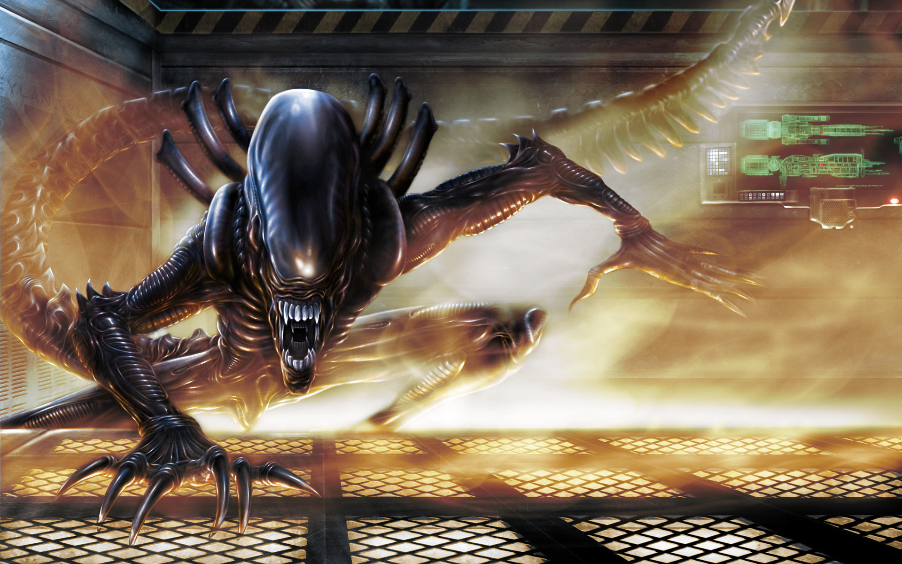
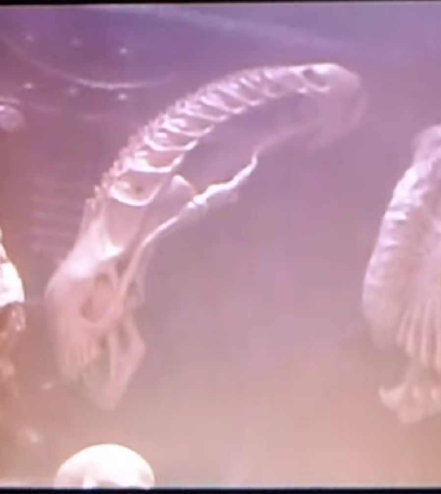

Contents
- 1
Stories
- 1.1 Predator
- 1.2 Xenomorph
- 1.3 Alien vs Predator
- 1.3.1 The Franchise
- 1.3.2 Humans and Earth
First, this is a collection of information of the AVP Franchise, in this website I'll explain the theories and stories of AVP at the best of my abilities, since I was a child I'm a fan of AVP, at first the xenomorph was the one I thought was cooler, but now I believe it's the Predator.
Origin
The Predator design was originally made by Stanley Winston, the final product was used in the film The Predator 1987 , if you didn't watched the film, go there and watch it, for this day in 08/05/2026 is available in Netflix, Disney+ and in other websites where people conserve films.
In the film we see that this monster is humanoid and use tools just like us, but is a savage that hunts only dangerous prey, we learn in the start of the film that it already destroyed an extraction helicopter and ambushed and killed the second best team of american special forces operatives of the whole world, leaving the corpses hanged from the trees without their skin on the Jungle.
We also learn that this isn't the first time, since even the Indians have stories of this killer. They called him the El Demonio que Hace Trofeos de Hombres (The Demon who makes trophies of Men)

It is in this film all the basic characteristics was placed, the predator uses invisibility to stalk and attack, it uses advanced weaponry like a plasma caster, it hunts using thermal vision, it has super strength and is very agile, it is capable of jumping tree to tree effortlessly, dragging full grown man while at it and it only appears when its very hot.
Naturally it had made success and the Predator now has a place in the horror films, giving birth to comics, games and more sequels.
Origin
The alien was also made for a film, it first appears in ALIEN of 1979, directed by Ridley Scott, if you didn't watched, is also in Disney+.
The film takes place in the future, we see a ship in space and the crew hibernating, there are men and woman in the ship they are awoken by the ship AI, they didn't reach earth and are only half-way from there because the AI picked a distress signal, we learn that the ship of the crew is from Weyland-Yutani company and by the company standards they must investigate the signal.
We learn pretty quickly that the signal came from an empty planet, they don't know what it means nor where exactly it came from, but the ship is damaged on landing they send two workers to go check where the signal came from while they fix the ship, the workers find a ship that is clearly not made by man, and there's some kind of eggs in it, one of the worker carelessy approach the egg and have its suit breached, we now have something in his face. And this is where it really begins the monster.
The lifeform in the worker face is called facehugger, at the attempt of trying to pick him off the guy, it tightens the neck, if they try one more time to remove the alien it will strangle the worker, lets cut it then, after cutting it we learn the facehugger has acidic blood, his blood corrode 4 floors of the ship, so they just let it alone. After some time it did latch off the worker face. All seems good, they find the facehugger corpse and go to eat. Well the worker had sudden chest pain and soon the alien busted of it and had run off.
After one day and half it already grew up and started killing the crew, one by one. Standing 5'11ft (1.80 meters tall) and with a tail long enough to pierce through 5 people, the alien is completely black, he doesn't have any eyes, not visible at least and has a second mouth for cool reasons.

It seems to fear fire but the last guy who tried to use fire against him got killed.
The film reception was good but it really got popular with its sequel, ALIENS by the young James Cameron the sequel defined the xeno tactic, anatomy and group mentality and is still considered the best film of the franchise.
Now there are alien comics, games and sequels, also happened a cross-over with the Predator universe and spawned a whole another franchise
Origin

Alien vs Predator first started as an idea by a scene in Predator 2, an alien skull is seen in the trophy room of the City Hunter as an easter egg, naturally they actually went trough with idea and released the first actual comic that started the IP, Alien versus Predator centered in the future of the Alien universe, we folloy Ryushi, in a recently colonized planet by Wayland-Yutani. Its a perfect comic.
It was made by Dark Horse Comics.
Since this comic have made so much success it got a whole comic Trilogy, games and films, although after the failure of AVP:Requiem its unlikely we will get another film out of it.
Depiction of Man and Society in the AVP universe
In Predator films we follow a 90's society, in the first film they are still in the Cold War, in the second film there are crime erupted in Los Angeles something that reflected the fact that Los Angeles in 1990 was one of the most dangerous cities to live.
In the Alien films we follow a future society, where Weyland-Yutani is the one that is calling the shots most of the time, and where's the iconic Marine Corps is the cleaner of WY mess, and the one that battles xenomorphs.
In AVP comics and games, Predators appear in the Alien future society as mortal enemy of xenomorph and a target for Weyland-Yutani research, the Marine Corps also battles Predators, although they mostly lose against them because of the Predator's superior technology and battle tactics.
We see always that because of greed of Wayland-Yutani of trying to use the Xenomorph as bio-weapons, humanity is always in the cross-fire of the war between Predator and Alien, since the Predator's species sees the xenomorph as the most dangerous enemy of the universe. And Alien species sees humanity as nothing more than breeding cattle.